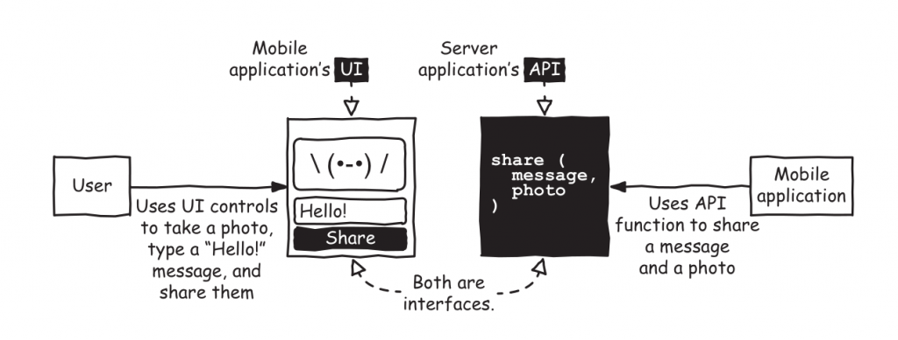
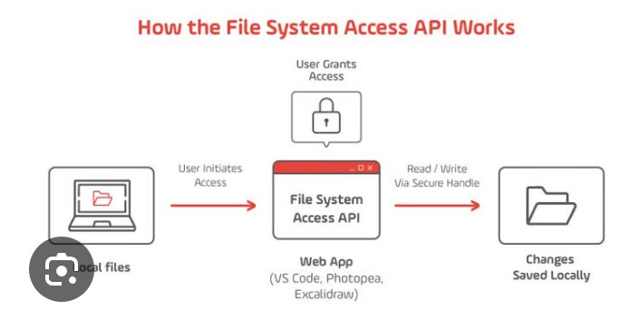
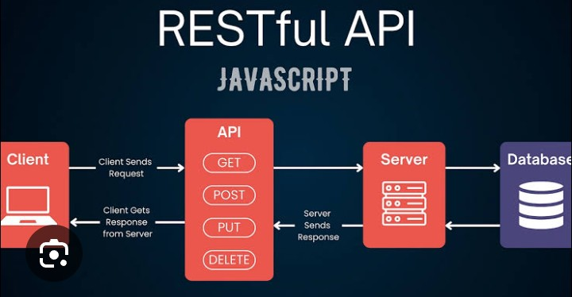
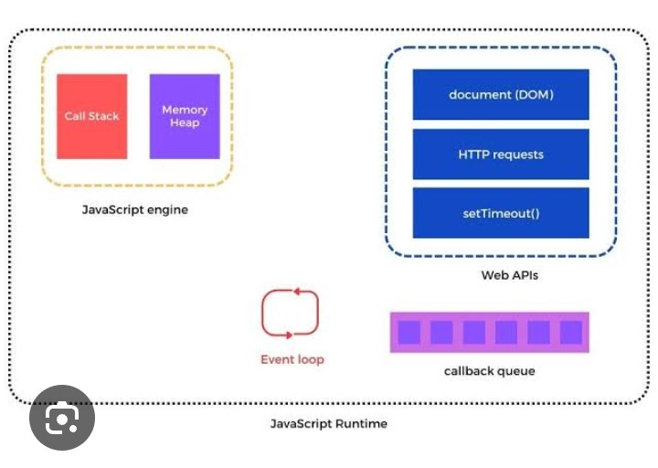

Application Programming Interfaces (APIs) are one of the most important technologies in modern web development. Almost every website and mobile application uses APIs to communicate with servers and exchange information. Whether you are checking the weather, logging into a website, viewing online products, or reading social media posts, APIs work behind the scenes to send and receive data between different software applications.
JavaScript provides powerful tools for working with APIs, allowing developers to request information from remote servers and display it on web pages without reloading the entire website. Learning how to use APIs is an essential skill for every frontend and full-stack developer because it enables applications to access real-time information from external services.

API stands for Application Programming Interface. It is a set of rules that allows two different software applications to communicate with each other. Instead of accessing a database directly, an application sends a request to an API, and the API returns the required information.
For example, a weather application sends a request to a weather API. The API processes the request, retrieves weather information from its database, and sends the data back to the application in a format that JavaScript can understand.
APIs make modern web applications dynamic and interactive. Instead of storing all information locally, applications can request the latest data whenever needed.
The communication process between a client and an API follows a simple sequence:
APIs use different HTTP methods depending on the type of operation being performed.
| Method | Purpose |
|---|---|
| GET | Retrieve data |
| POST | Create new data |
| PUT | Update existing data |
| DELETE | Remove data |
Modern JavaScript provides the fetch() function for sending HTTP requests. It is simple, fast, and supported by all modern browsers.
fetch("https://jsonplaceholder.typicode.com/posts")
.then(response => response.json())
.then(data => {
console.log(data);
});
This code sends a GET request to a public API and displays the received data inside the browser console.

Most APIs return information in JSON (JavaScript Object Notation). JSON is a lightweight format used for exchanging data between servers and applications. It is easy for both humans and computers to read.
{
"title":"JavaScript",
"author":"Asim",
"year":2026
}
JavaScript automatically converts JSON into objects using the response.json() method, making the data easy to use inside applications.
Imagine you are building a news website. Instead of manually writing every news article, your JavaScript application requests the latest headlines from a news API. Whenever users refresh the page, the website automatically displays the newest articles. This approach saves time, keeps content updated, and provides a better user experience.
Although the fetch() function works well with .then(), modern JavaScript developers usually prefer async and await. This syntax makes asynchronous code easier to read and maintain because it looks similar to normal synchronous code.
async function getPosts(){
const response = await fetch("https://jsonplaceholder.typicode.com/posts");
const data = await response.json();
console.log(data);
}
getPosts();
The await keyword pauses execution until the API response is received, making the code cleaner and more understandable.
Network requests may fail because of internet problems, server issues, or incorrect URLs. JavaScript uses the try...catch statement to handle these errors gracefully.
async function loadData(){
try{
const response = await fetch("https://jsonplaceholder.typicode.com/posts");
const data = await response.json();
console.log(data);
}
catch(error){
console.log("Error:", error);
}
}
loadData();
Proper error handling prevents applications from crashing and improves the user experience.
Instead of printing API data in the console, developers usually display it directly on the webpage using the DOM.
The user's name received from the API will appear inside the HTML element.
APIs are not only used for receiving information. They can also send new information to a server using the POST method.
fetch("https://jsonplaceholder.typicode.com/posts",{
method:"POST",
headers:{
"Content-Type":"application/json"
},
body:JSON.stringify({
title:"Learning APIs",
body:"JavaScript Fetch API",
userId:1
})
});
This example sends JSON data to the server using an HTTP POST request.
Headers provide additional information about an HTTP request or response. They help the server understand the type of data being sent.
headers:{
"Content-Type":"application/json",
"Authorization":"Bearer YOUR_TOKEN"
}
Many secure APIs require authentication tokens before allowing access to their data.
Query parameters allow developers to request specific information instead of downloading unnecessary data.
https://api.example.com/products?category=laptop&page=1
In this example, the API returns only laptop products from the first page of results.

Imagine an e-commerce website where customers search for mobile phones. Instead of storing every product on the webpage, JavaScript sends an API request with the search keyword. The server returns matching products, and the website immediately displays names, prices, descriptions, and images without refreshing the page. This creates a fast and interactive shopping experience.
Whenever an API responds to a request, it also returns an HTTP status code. These status codes tell developers whether the request was successful or if an error occurred. Understanding these codes helps developers debug applications more efficiently.
| Status Code | Meaning |
|---|---|
| 200 | Request Successful |
| 201 | Resource Created Successfully |
| 400 | Bad Request |
| 401 | Unauthorized Access |
| 404 | Resource Not Found |
| 500 | Internal Server Error |
Professional developers follow several best practices when working with APIs. These practices improve security, maintainability, and application performance.
APIs are used in almost every modern application. Social media platforms load posts through APIs, weather applications retrieve live forecasts, banking apps display account information securely, food delivery services show restaurant menus, and e-commerce websites fetch products, prices, and customer reviews from remote servers. APIs make these applications dynamic, scalable, and capable of delivering real-time information.
These free APIs are excellent for practicing JavaScript, Fetch API, and asynchronous programming.

Working with APIs is one of the most valuable skills for every JavaScript developer. APIs allow web applications to communicate with remote servers, exchange information, and display real-time data without refreshing the page. By learning Fetch API, JSON, async/await, HTTP methods, error handling, and API security practices, developers can build powerful applications such as weather apps, news websites, online stores, dashboards, and social media platforms. Mastering APIs is also an important step toward learning advanced technologies such as React, Node.js, Express.js, and full-stack web development.